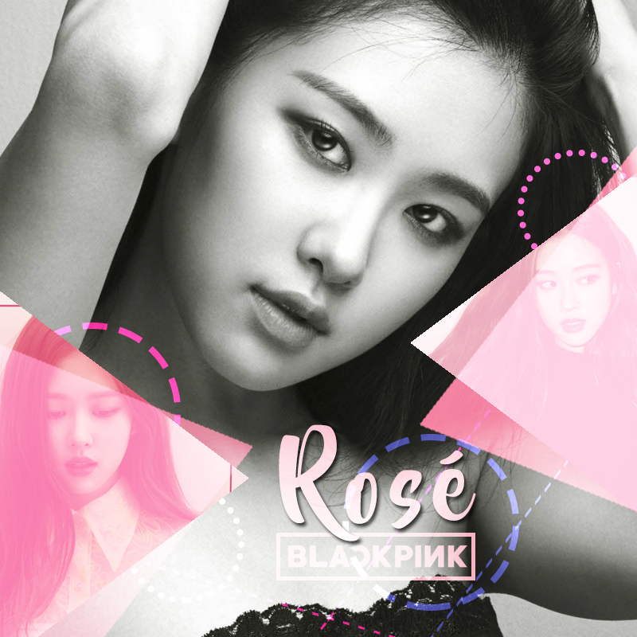

|
 |
About RoseShe is a Korean-New Zealand singer who grew up in South Korea, was born in New Zealand and grew up in Melbourne, Australia. She is currently a member of the girl group BLACKPINK under YG Entertainment, where she serves as the lead singer and lead dancer. On March 12, 2021, she made her solo debut with the single album "R" and achieved six No. 1 positions in South Korea, becoming the first female artist to exceed 400,000 sales and holding two Guinness World Records. The registration number of the Korea Music Copyright Association is 10030226.Back |